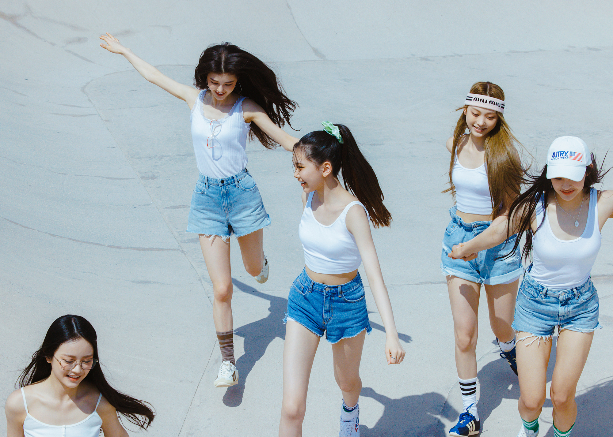

1st EP 'New Jeans'
Track list
- 1. Attention (Title)
- 2. Hype Boy (Title)
- 3. Cookie (Title)
- 4. Hurt
Info
Release Date August 1, 2022
Genres Dance, R&B/Soul
Publisher YG PLUS
Agency ADOR
Videos


newjeans.kr
[NewJeans 1st EP 'New Jeans' Album Review]
멤버 구성은 물론 그룹 이름조차 공개되지 않았던 시기부터 ‘민희진 걸그룹'이라 불리며 올 한해 가장 큰 기대를 불러 모았던 ADOR(All Doors One Room)의 첫 번째 신인, NewJeans가 데뷔했다.
1st EP "New Jeans"는 NewJeans가 추구하는 '좋은 음악'에 대한 질문을 던진다.
정형화된 K-POP의 익숙한 공식을 따르지 않았고, POP에 기반을 두고 있지만 특정 스타일만을 고수하지 않았다.
어디서든 편하게 들을 수 있는 세련된 이지리스닝 팝을 추구하는 동시에 과장 없는 자연스러운 사운드 엔지니어링으로 NewJeans 멤버들 본연의 목소리를 살리는 프로듀싱을 진행했다.
앨범에 수록된 네 곡은 전원 10대로 구성된 NewJeans 멤버들의 순수하고 자연스러운 매력과 10대 고유의 에너지를 오롯이 담아내고 있다.
얼핏 들으면 NewJeans 또래의 사랑을 이야기하는 것만 같지만, 각각의 수록곡은 다양한 음악적 시도를 바탕으로 각기 다른 서사를 담고 있고 이러한 서사가 모여 자연스럽게 10대의 라이프 스타일을 포괄한다.
또한 개인의 스토리 너머 ‘우리'라는 서사를 그린다. 파격적으로 세 곡의 타이틀곡을 내세운 건 NewJeans가 전하고 싶은 메시지를 온전히 전달하기 위한 포석이다.
NewJeans는 무엇보다 솔직함과 자연스러움을 추구한다.
항상 기존과 다른 방식으로 K-POP 시장의 트렌드를 이끌고, 혁신적인 아티스트 브랜드를 만들어 온 민희진 총괄 프로듀서는 ‘대중음악은 일상과 초근접해 있는 문화이기 때문에 마치 매일 입는 옷과도 같다'라고 말한다.
트렌드의 정중앙에서, 혹은 트렌드와 무관하게 시대 불문 남녀노소 모두에게 사랑받아온 ‘Jean'처럼.
이 시대의 새로운 아이콘으로, 매일 찾게 되는 언제입어도 질리지 않는 "New Jeans"가 되길!
이것이 NewJeans가 지향하는 가치이자, New Genes - NewJeans의 시작이다.